Which changes in CpG site methylation are associated with reproductive effort?
We have now identified a subset of CpG sites that significantly change over the lekking season, either by increasing or decreasing in methylation level. We next test which CpG site changes are significantly associated with different measures of reproductive effort.
Lekking is an energy-intensive, costly activity, as reflected by the losses in body mass in males that invest in reproduction (Lebigre et al., 2007). Therefore, we expect that the cost associated with high reproductive investment ledas to the up- or downregulation of associated genes, for example to invest more or less in certain other processess.
Similar to before, we build a GLMM per CpG site to identify CpG sites whose DNA methylation change is associated with reproductive effort. We quantify reproductive effort using three behavioural traits: lek attendance, fighting rate and lek centrality. For each CpG site for each trait, we build a model that predicts delta methylation, while fitting the behaviour as a fixed effect.
7.1 Pre-methylation vs delta methylation
Prior to the analysis, we investigated the relationship between delta methylation and pre-lekking methylation levels. We expect that pre-lekking methylation levels can affect delta methylation %. If pre-lekking methylation is 0%, there is potential for +100% change, but if pre-lekking methylation is 100%, there is potential for -100% change. On the other hand, if pre-lekking methylation is 50%, there is only potential for -50% and +50% change. Thus, we expect a U-shaped relationship between pre-lekking and absolute delta methylation. I plot the empirical data for this, based on only the CpG sites that significantly change across the lekking period. The red line in the left plot is the (linear) regression while correcting for id as a random effect (so a lmer output).
Pre-lekking vs delta lekking methylation %
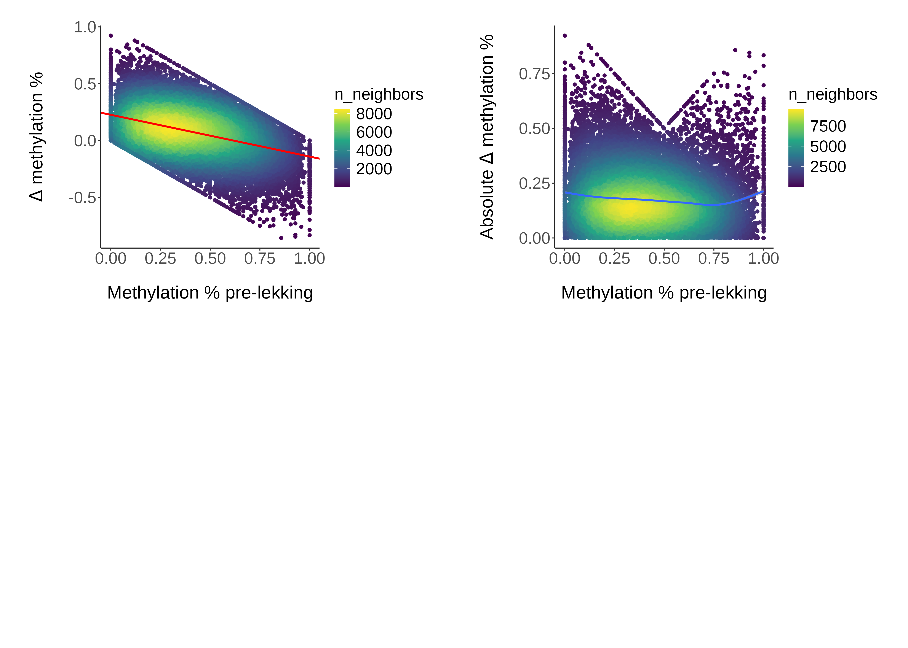
There does seem to be some association between the two, yet we might mask the effect of delta methylation on the phenotype if we include pre-lekking methylation in the model too. Therefore, we run two models in parallel: one that does include pre-lekking methylation % and one that does not, and then compare the model output / inference based on these two models. Note: for the manuscript we might want to choose for one in the main text and present the other in the supplements (although the exact CpG sites change, the conclusion that little is going on remains the same)
7.2 Prepare the data
Code
### load packagespacman::p_load(tidyverse, data.table, tibble, gaston, parallel, performance, lmerTest, tidystats, ggpointdensity)source("scripts/plotting_theme.R")### load data epiload(file="results/modeloutput/changing/changing_sites_glmer.RData")### load phenotypic dataload(file ="data/phenotypes/fulldata_complete_epi_withdates.RData")### methylation differenceload(file ="results/modeloutput/all_sites_deltameth.RData")delta_meth <-subset(delta_meth, chr_pos %in% changing_cpg$chr_pos)### combine delta methylation data with site and behaviour infodelta_meth <-left_join(delta_meth, unique(all_pheno_epi[,c("id", "year", "site", "Core")], by =c("id", "year")))### z-transform the traits before the model that subsets IDs and years where there is### data for that CpG siteeffort <- all_pheno_epi %>% dplyr::select(c("id", "year", "attend", "fight", "dist", "MS")) %>%filter(!is.na(attend)) %>%unique()effort <-subset(effort, id %in% delta_meth$id)effort$attend_scl <-scale(effort$attend)effort$fight_scl <-scale(effort$fight)effort$dist_scl <-scale(effort$dist)### combine reproductive effort data with methylation datadelta_meth <-left_join(delta_meth, effort[,c("id", "year", "attend", "fight", "dist", "attend_scl", "fight_scl", "dist_scl")], by =c("id", "year"))
Note that we z-transform the phenotypic data based on all samples, rather than on a model-by-model basis. This is because not all individuals will have epigenetic data for each CpG site, meaning that the z-transformed version of the phenotypic traits would change depending on the sample size, which we want to avoid.
7.3 Filter for n > 20
Although we have filtered for CpG sites that have enough samples in both the pre- and post-lekking time periods, this does not mean that it was the same pair of samples that have data in both time periods. This means that we cannot outrule that we have a low sample size for delta methylation (where both pre- and post-lekking methylations for a given individual for a given CpG site had to be complete) differences that can be associated with phenotypic traits. Therefore, before we run the models, we filter for CpG sites that have at least 20 measures of delta methylation (and the phenotype). Since not all data is complete for all three behavioural traits, we do this on a trait-by-trait basis
### only select cpg sites with enough datadelta_meth_n_dist <- delta_meth %>%group_by(chr_pos) %>%filter(!is.na(delta_meth)&!is.na(dist)) %>%tally()delta_meth_n_dist <-subset(delta_meth_n_dist, n >20)delta_meth_sub_dist <-subset(delta_meth, chr_pos %in% delta_meth_n_dist$chr_pos)length(unique(delta_meth_sub_dist$chr_pos)) # 760 sitesdelta_meth_dist_ls <- delta_meth_sub_dist %>%group_split(chr_pos)# repeat for attendance and fighting rate
At this stage, we have the 1,026 CpG sites.
7.4 Function to run the model
You can find the full function below, but importantly this is the LMM formula I run for each CpG site for each trait:
Within the function, we can define if we want to include pre-lekking methylation % or not by setting the ‘pre’ arument to “control” or “no_control” respectively.
source("scripts/function_models.R") # the function function_model_delta_pheno runs the model# the function function_process_model contains a collector function that puts all data in a dataframe, excludes models with convergence errors,# plots overdispersion, optionally filters for overdispersion (95 percentile), applies an FDR-correction,# makes a volcano plot, and saves all these data
In this function, we do the following (in this order):
*Convert the list into a dataframe data <- do.call(rbind.data.frame, list)
*Exclude models with convergence errors data <- subset(data, !grepl("converge", convergence))
*Create histograms of the overdispersion ratio and p-value ggplot(data, aes(x = dispersion.ratio)) + geom_histogram()
Create a volcano plot where the model beta estimate is on the x-axis ggplot(data, aes(x = parameter_estimate, y = -log10(parameter_qval))) + geom_point(aes(col = sig))
7.5.1 Attendance
808 CpG sites had enough phenotypic and epigenetic data to run the attendance model (after filtering for n > 20).
CpG site “ScEsiA3_17655__HRSCAF_20552_371333” is located in an upstream region (gene ID ANN24887, similar to GPR87).
Note
GPR87: This gene encodes a G protein-coupled receptor and is located in a cluster of G protein-couple receptor genes on chromosome 3. The encoded protein has been shown to be overexpressed in lung squamous cell carcinoma (PMID:18057535) and regulated by p53 (PMID:19602589). [provided by RefSeq, Nov 2011]
CpG site “ScEsiA3_18278__HRSCAF_21663_133779007” is located in the exon of ANN06029 (similar to Adck2) and upstream from ANN06028 (closer) and ANN06030 (both unknown functions). This is the same CpG site that is associated with changes in body mass (when including pre-lekking meth %)!
Note
Adck2: This gene AarF Domain Containing Kinase 2 is predicted to enable ATP binding activity and protein serine/threonine kinase activity. Predicted to be involved in protein phosphorylation. Predicted to be integral component of membrane. [provided by Alliance of Genome Resources, Apr 2022]
CpG site “ScEsiA3_18752__HRSCAF_22883_2574288” is located in upstream from gene ID ANN31167 (similar to PPP2R2A) and downstream from gene ID ANN31166 (unknown function, closer).
Note
PPP2R2A: The product of this gene belongs to the phosphatase 2 regulatory subunit B family. Protein phosphatase 2 is one of the four major Ser/Thr phosphatases, and it is implicated in the negative control of cell growth and division. It consists of a common heteromeric core enzyme, which is composed of a catalytic subunit and a constant regulatory subunit, that associates with a variety of regulatory subunits. The B regulatory subunit might modulate substrate selectivity and catalytic activity. This gene encodes an alpha isoform of the regulatory subunit B55 subfamily. Alternatively spliced transcript variants have been described. [provided by RefSeq, Apr 2010]
Histogram dispersion and p-value: fighting rate with pre-methylation
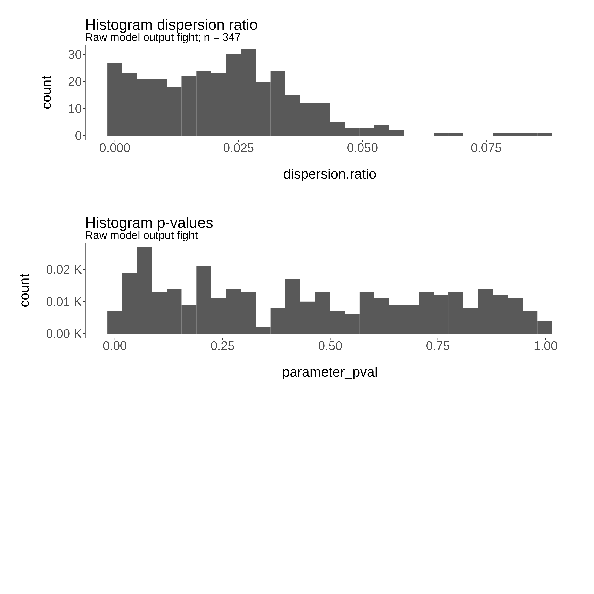
Volcano plot: fighting rate with pre-methylation
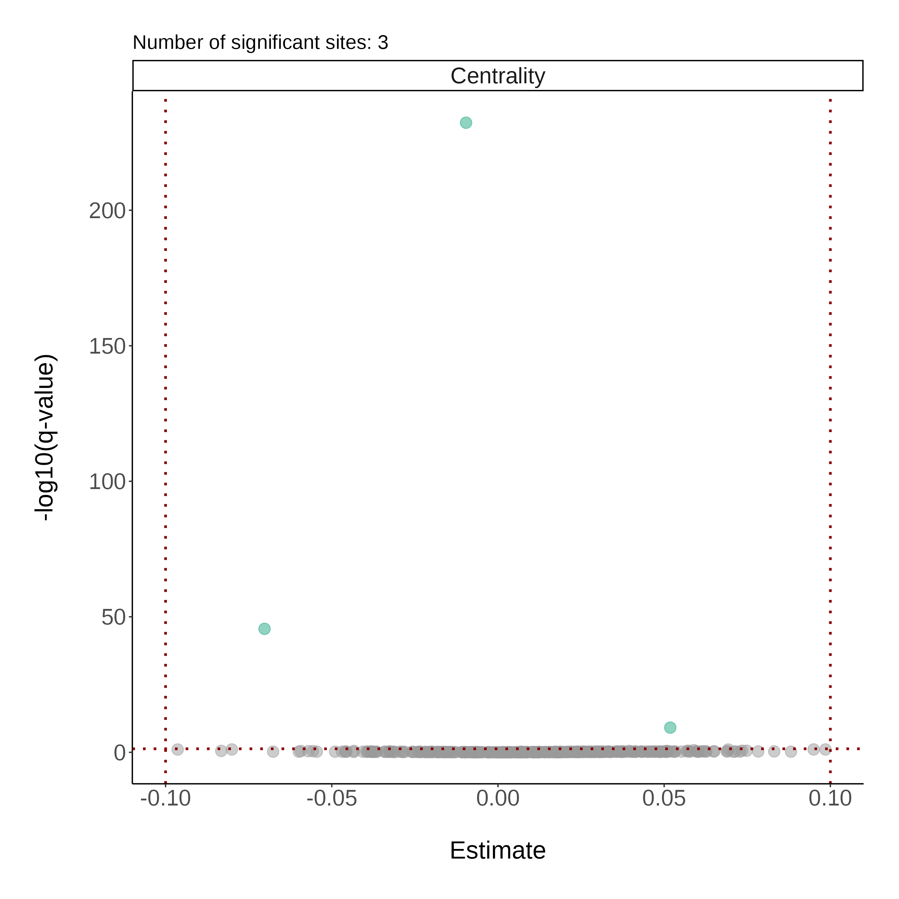
Raw data: fighting rate with pre-methylation CpG 1
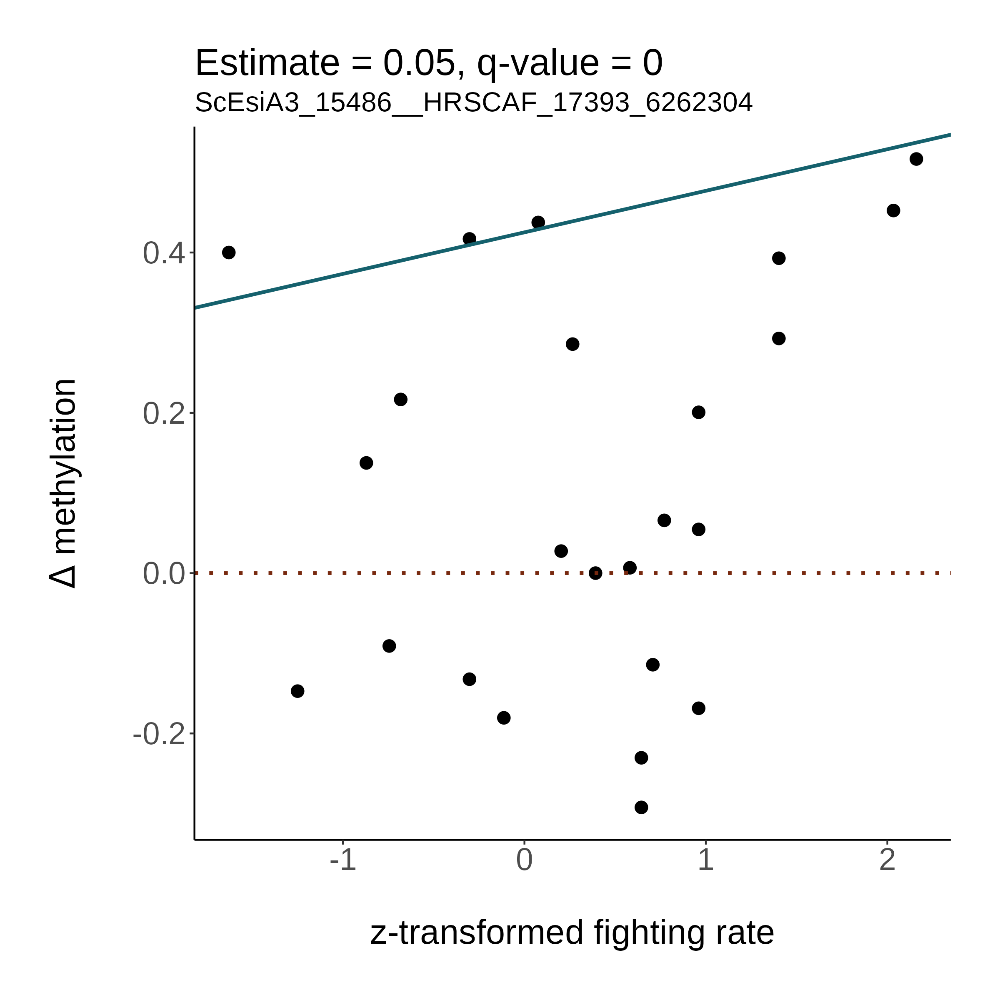
Raw data: fighting rate with pre-methylation CpG 2
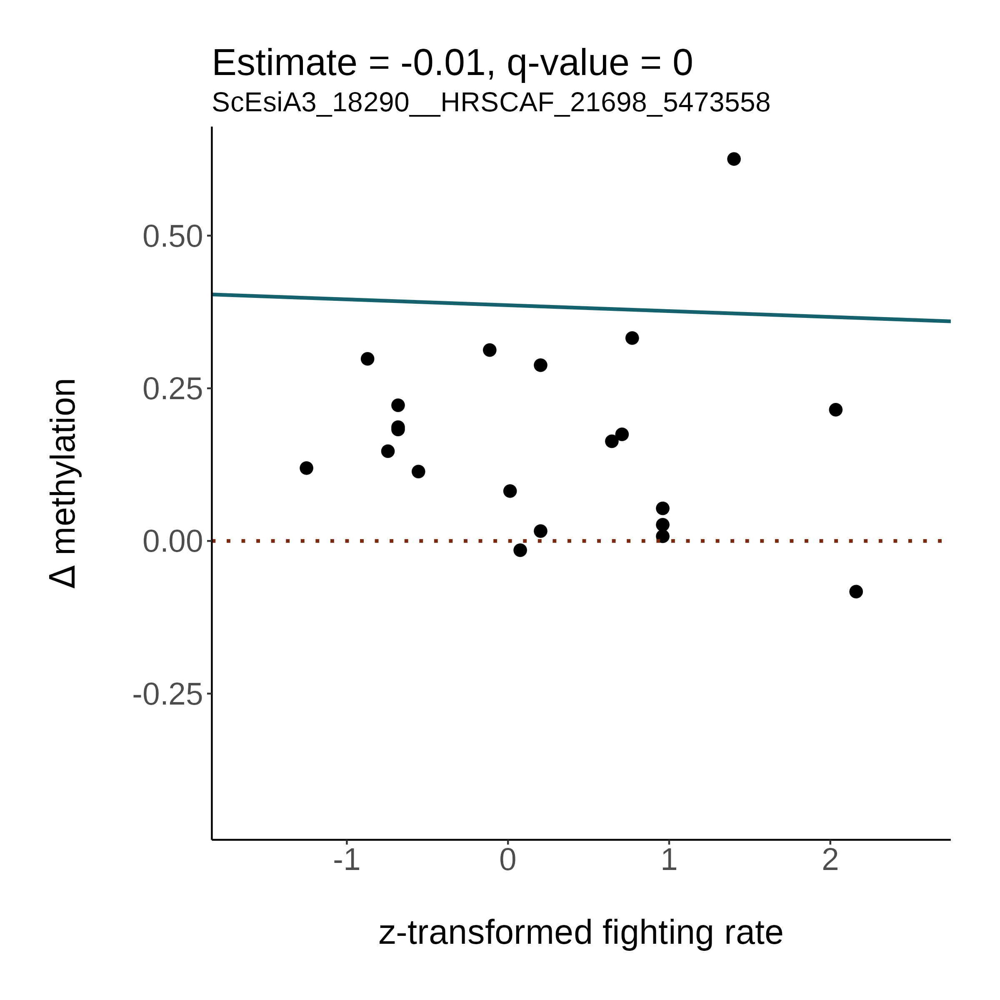
Raw data: fighting rate with pre-methylation CpG 3
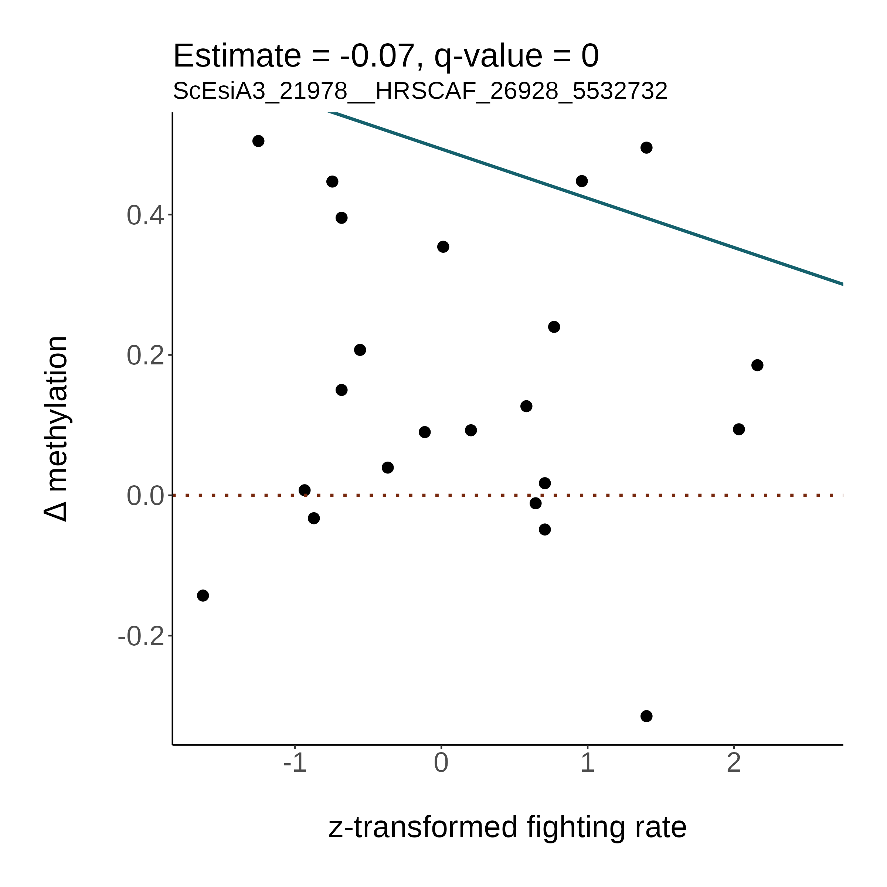
CpG site “ScEsiA3_15486__HRSCAF_17393_6262304” is located in the exon of gene ID ANN19413 (similar to RHOF) and upstream from gene ID ANN19414 (similar to Rad9a).
Note
RHOF: Ras Homolog Family Member F, Filopodia Associated. Predicted to enable GTP binding activity; GTPase activity; and protein kinase binding activity. Involved in actin filament organization. Located in extracellular exosome. [provided by Alliance of Genome Resources, Apr 2022]
Rad9a: This gene product is highly similar to Schizosaccharomyces pombe rad9, a cell cycle checkpoint protein required for cell cycle arrest and DNA damage repair. This protein possesses 3’ to 5’ exonuclease activity, which may contribute to its role in sensing and repairing DNA damage. It forms a checkpoint protein complex with RAD1 and HUS1. This complex is recruited by checkpoint protein RAD17 to the sites of DNA damage, which is thought to be important for triggering the checkpoint-signaling cascade. Alternatively spliced transcript variants encoding different isoforms have been found for this gene. [provided by RefSeq, Aug 2011]
CpG site “ScEsiA3_18290__HRSCAF_21698_5473558” is located in an upstream region (gene ID ANN29135, similar to SLC38A10).
Note
SLC38A10: Predicted to enable amino acid transmembrane transporter activity. Predicted to be involved in amino acid transmembrane transport. Predicted to act upstream of or within bone development. Located in Golgi apparatus. [provided by Alliance of Genome Resources, Apr 2022]
CpG site “ScEsiA3_21978__HRSCAF_26928_5532732” is located in an intronic region of gene ID ANN24560 (similar to Jup) and upstream region of gene IDs ANN24559 (similar to TRAK1) and ANN24561 similar to Fkbp10.
Note
JUP: This gene encodes a major cytoplasmic protein which is the only known constituent common to submembranous plaques of both desmosomes and intermediate junctions. This protein forms distinct complexes with cadherins and desmosomal cadherins and is a member of the catenin family since it contains a distinct repeating amino acid motif called the armadillo repeat. Mutation in this gene has been associated with Naxos disease. Alternative splicing occurs in this gene; however, not all transcripts have been fully described. [provided by RefSeq, Jul 2008]
TRAK1: Predicted to enable GABA receptor binding activity and myosin binding activity. Involved in endosome to lysosome transport. Located in early endosome and mitochondrion. Implicated in developmental and epileptic encephalopathy 68. [provided by Alliance of Genome Resources, Apr 2022]
Fkbp10: The protein encoded by this gene belongs to the FKBP-type peptidyl-prolyl cis/trans isomerase (PPIase) family. This protein localizes to the endoplasmic reticulum and acts as a molecular chaperone. Alternatively spliced variants encoding different isoforms have been reported, but their biological validity has not been determined.[provided by RefSeq, Nov 2009]
Histogram dispersion and p-value: centrality with pre-methylation
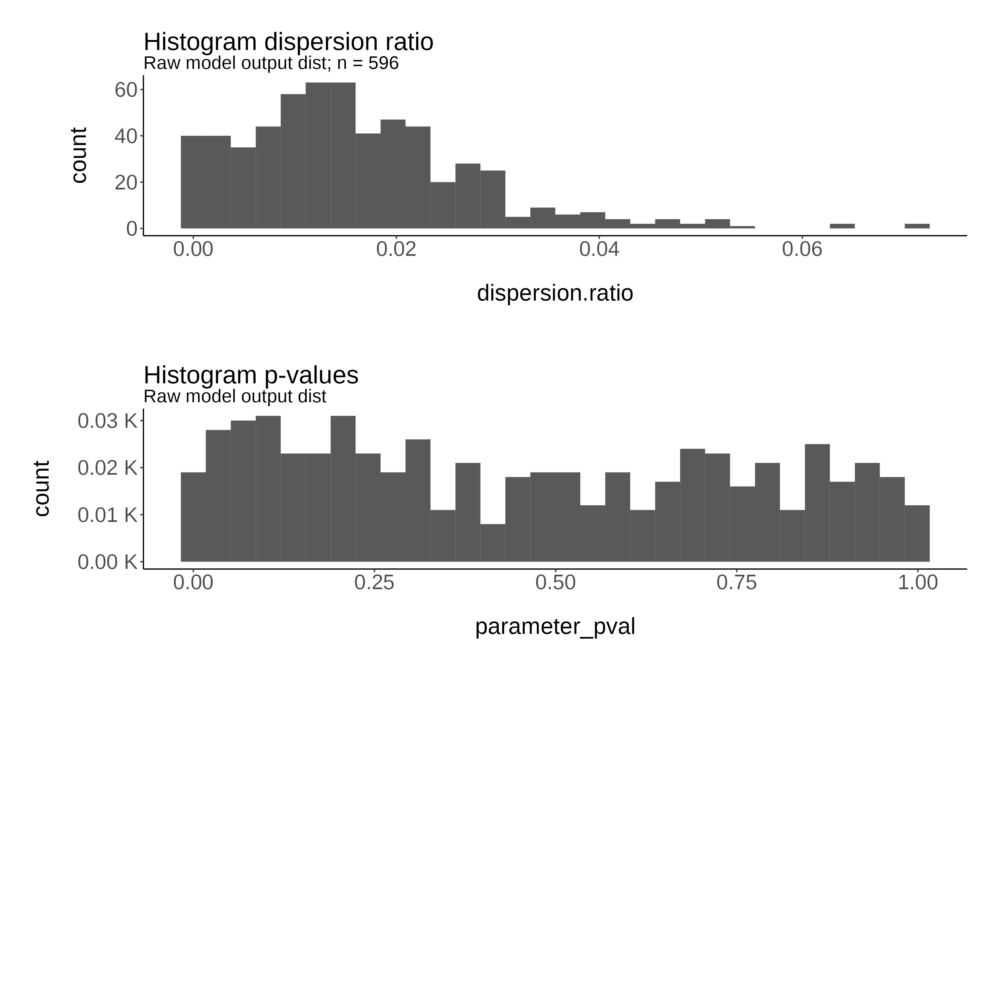
Volcano plot: centrality with pre-methylation
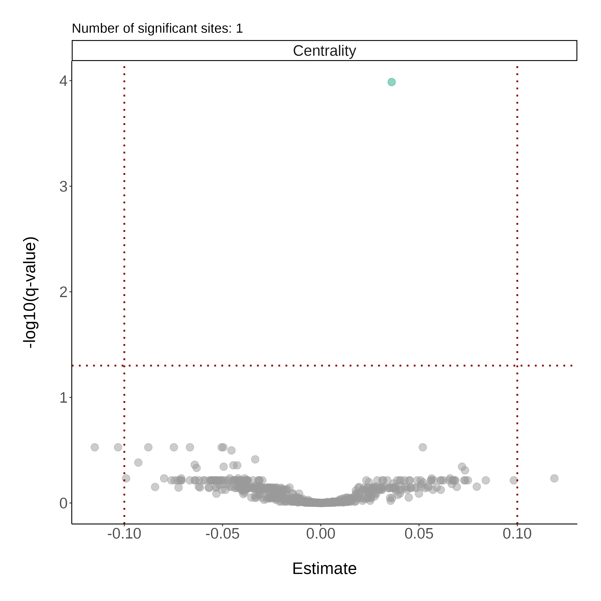
Raw data: centrality with pre-methylation CpG 1
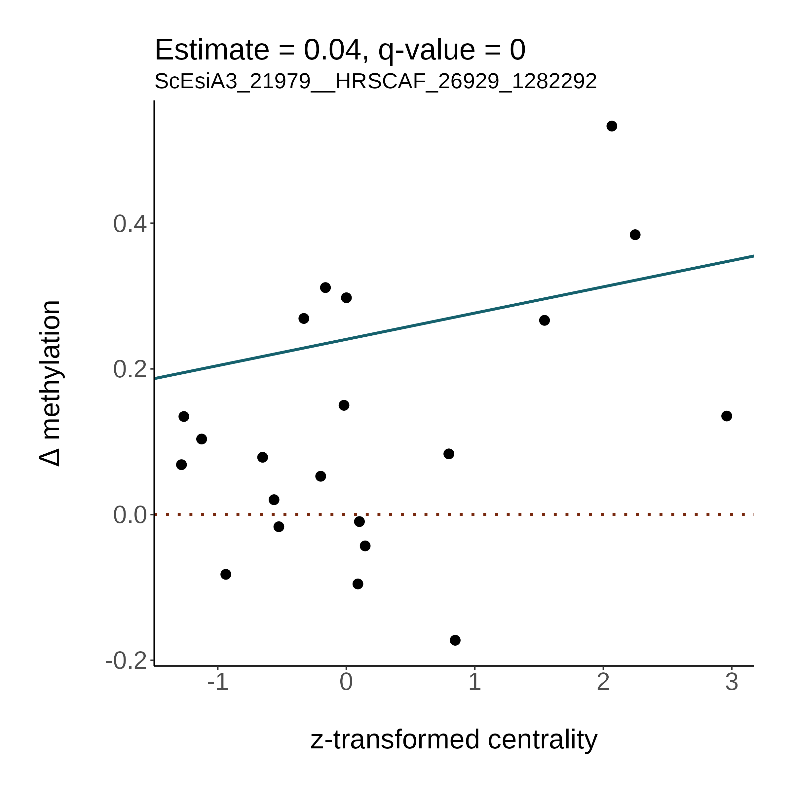
CpG site “ScEsiA3_21979__HRSCAF_26929_1282292” is located in an upstream region (gene ID ANN27654 similar to NFIC). Note that this is the same site that is significantly associated with delta IgG!!
Note
NFIC: The protein encoded by this gene belongs to the CTF/NF-I family. These are dimeric DNA-binding proteins, and function as cellular transcription factors and as replication factors for adenovirus DNA replication. Alternatively spliced transcript variants encoding different isoforms have been described for this gene. [provided by RefSeq, Oct 2011]
This CpG site is the same one that was significant as the model run with pre-methylation.
Histogram dispersion and p-value: centrality no pre-methylation
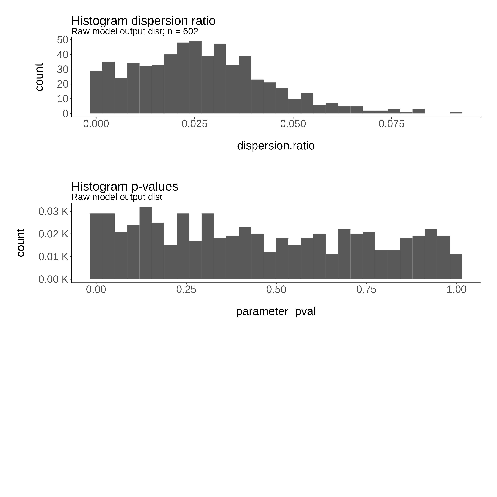
Volcano plot: centrality no pre-methylation
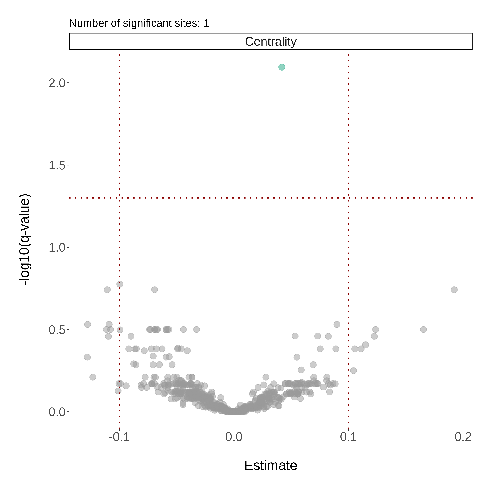
Raw data: centrality no pre-methylation CpG 1
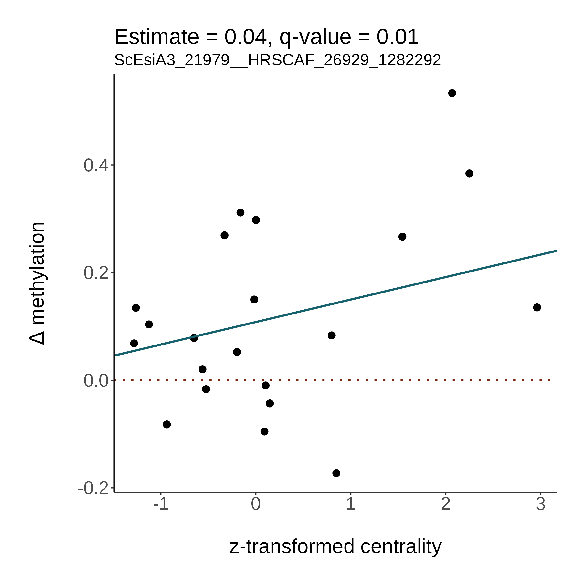
This is the same CpG site that was significant in the model with pre-lekking methylation %
7.6 Concluding remarks
So it seems like very litte CpG methylation changes are associated with reproductive effort. When we do not control for pre-lekking methylation %, we don’t find anything significant for attendance and fighting rate, and we find the same single CpG significant for centrality that is significant in the model where we do control for pre-lekking methylation. We find 3, 3, and 1 significant CpG site for lek attendance, fighting rate and centrality respectively in the models where we do control for pre-lekking methylation.